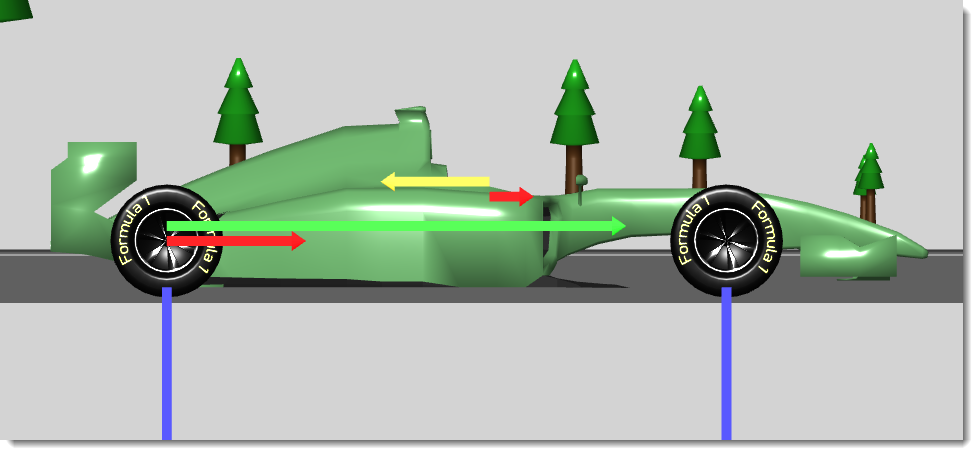

Chris Long, 25th March 2020. GitHub
The F1 Inverted Simulator lets you explore the forces acting on an F1 car (or any car, really) to see how thrust, drag, traction and downforce interact to affect the performance of a car at different speeds.
I created it to learn more about the frequently-quoted claim that, given a suitable tunnel or track, F1 cars could drive upside down (and to illustrate my YouTube video on this subject). Although it's clearly true that F1 cars do generate enough downforce to support their own weight, making the driving-upside-down trick feasible, such discussions never seem to talk about the need for the inverted car to still have enough traction to keep itself moving forward.
It's a very basic simulator but it does enough to accurately explore the forces acting on the car at different speeds. It doesn't simulate the car's suspension, or weight transfer during acceleration and braking, but those things aren't important for my purposes.
The simulator confirms that F1 cars can generate enough downforce to hold themselves up and still have traction available to maintain the necessary speed. However, many production sports cars that claim to generate significant downforce wouldn't fare so well. Driving upside-down requires a lot of downforce - not just a little more than the car's weight, but nearly double - and that comes with lots of drag, so only cars with extreme aerodynamics and lots of power can manage it.
To play with the simulator, click here.

What do the arrows represent?
You can find this whole thing on GitHub here: https://github.com/ChrisBLong/f1-inverted. It's all done in JavaScript using the three.js library. The F1 car model came from here and was created by ArtyomOganesyan, released under Creative Commons CC BY-NC 4.0 licence. Further 3D modelling was done in Blender.
Have fun!